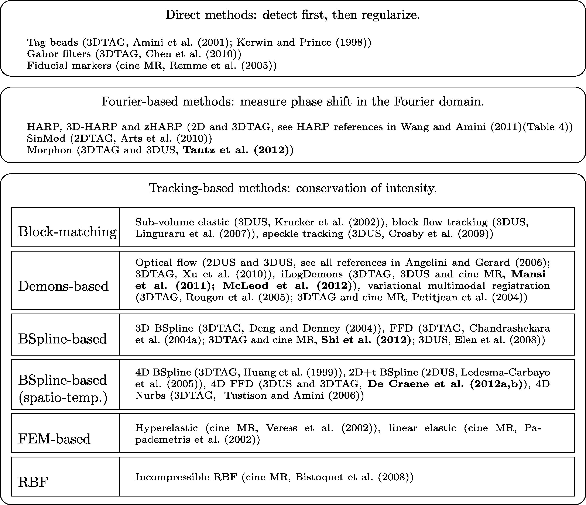
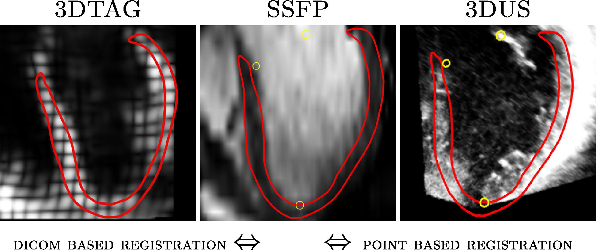
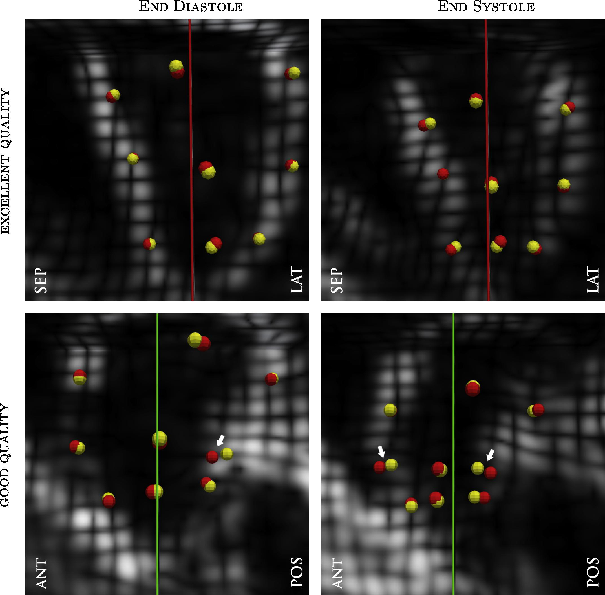
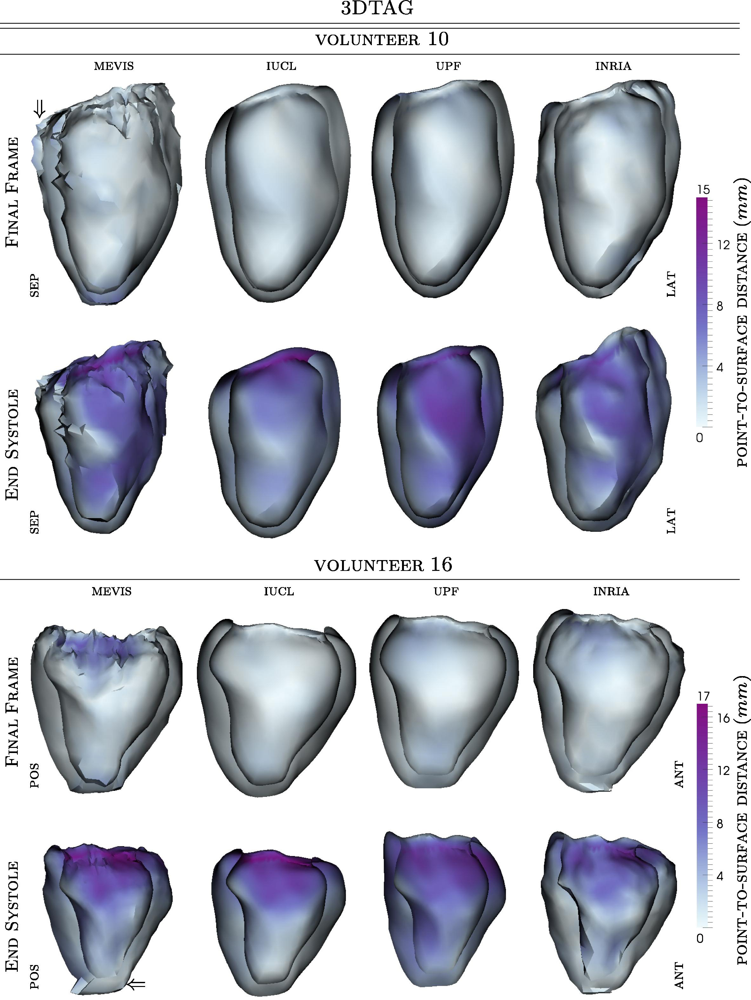
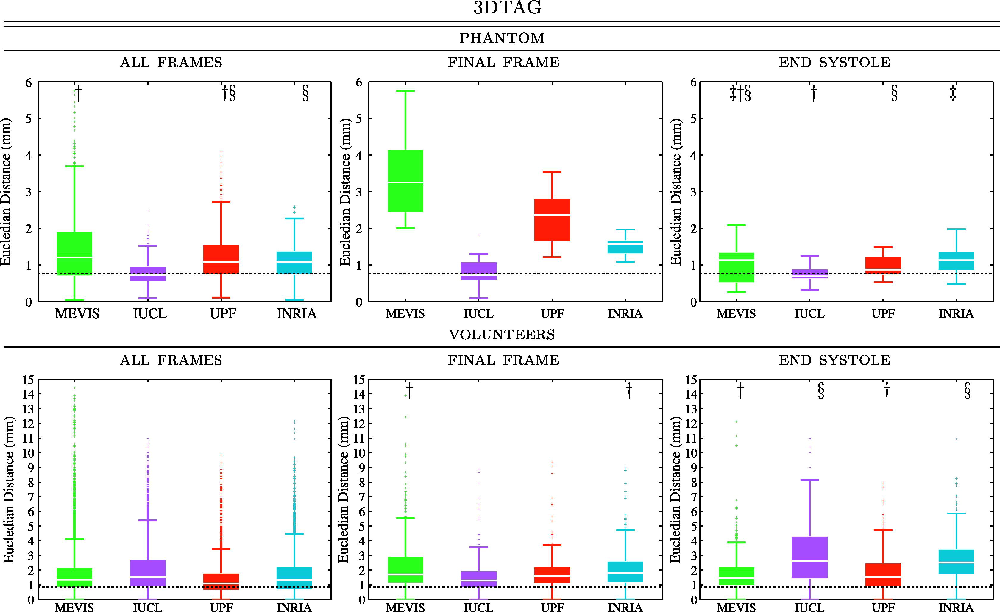
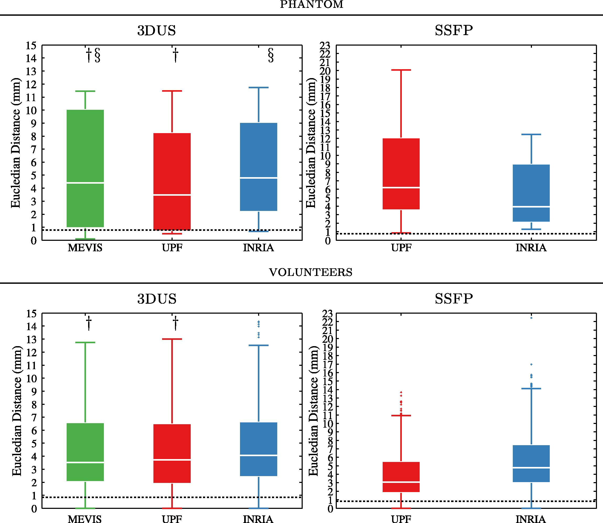
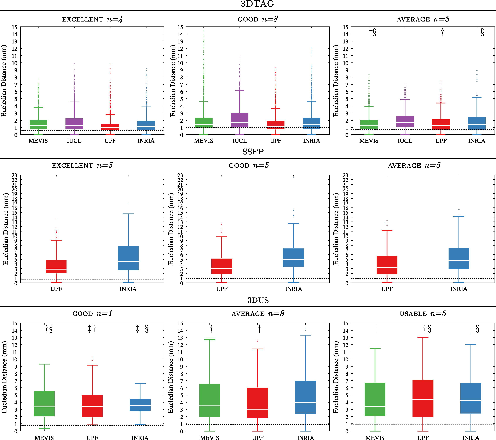
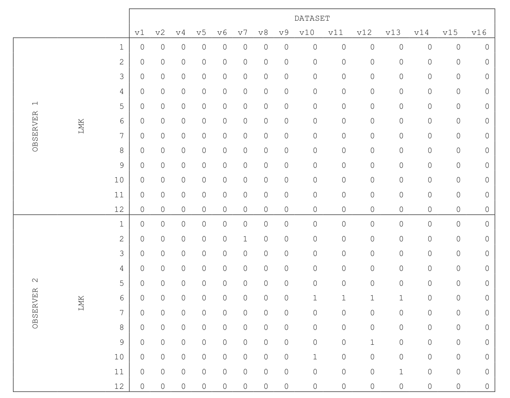

阅读记录：Benchmarking framework for myocardial tracking and deformation algorithms: An open access database
前言
阅读完的文献时间久了容易忘了，而且再次阅读时常因为原文是英文，回顾起来也没有那么顺利，于是想到在第一次阅读时，在翻译软件 的基础上进行修改并记录。
DOI
Abstract:
In this paper we present a benchmarking framework for the validation of cardiac motion analysis algorithms. The reported methods are the response to an open challenge that was issued to the medical imaging community through a MICCAI workshop. The database included magnetic resonance (MR) and 3D ultrasound (3DUS) datasets from a dynamic phantom and 15 healthy volunteers. Participants processed 3D tagged MR datasets (3DTAG), cine steady state free precession MR datasets (SSFP) and 3DUS datasets, amounting to 1158 image volumes. Ground-truth for motion tracking was based on 12 landmarks (4 walls at 3 ventricular levels). They were manually tracked by two observers in the 3DTAG data over the whole cardiac cycle, using an in-house application with 4D visualization capabilities. The median of the inter-observer variability was computed for the phantom dataset (0.77 mm) and for the volunteer datasets (0.84 mm). The ground-truth was registered to 3DUS coordinates using a point based similarity transform. Four institutions responded to the challenge by providing motion estimates for the data: Fraunhofer MEVIS (MEVIS), Bremen, Germany; Imperial College London - University College London (IUCL), UK; Universitat Pompeu Fabra (UPF), Barcelona, Spain; Inria-Asclepios project (INRIA), France. Details on the implementation and evaluation of the four methodologies are presented in this manuscript. The manually tracked landmarks were used to evaluate tracking accuracy of all methodologies. For 3DTAG, median values were computed over all time frames for the phantom dataset (MEVIS = 1.20 mm, IUCL = 0.73 mm, UPF = 1.10 mm, INRIA = 1.09 mm) and for the volunteer datasets (MEVIS = 1.33 mm, IUCL = 1.52 mm, UPF = 1.09 mm, INRIA = 1.32 mm). For 3DUS, median values were computed at end diastole and end systole for the phantom dataset (MEVIS = 4.40 mm, UPF = 3.48 mm, INRIA = 4.78 mm) and for the volunteer datasets (MEVIS = 3.51 mm, UPF = 3.71 mm, INRIA = 4.07 mm). For SSFP, median values were computed at end diastole and end systole for the phantom dataset(UPF = 6.18 mm, INRIA = 3.93 mm) and for the volunteer datasets (UPF = 3.09 mm, INRIA = 4.78 mm). Finally, strain curves were generated and qualitatively compared. Good agreement was found between the different modalities and methodologies, except for radial strain that showed a high variability in cases of lower image quality.
在本文中，我们提出了一个用于验证心脏运动分析算法的基准框架。所报告的方法是对通过MICCAI研讨会向医学影像界发出的一项公开挑战的回应。该数据库包括来自一个动态模型和15名健康志愿者的磁共振（MR）和三维超声（3DUS）数据集。参与者处理了三维标记的磁共振数据集（3DTAG）、平扫稳态自由前行磁共振数据集（SSFP）和三维超声数据集，共1158个图像卷。运动追踪的Ground-truth是基于12个标记（landmarks）（3个心室水平的4个室壁）。它们是由两名观察者在整个心动周期的3DTAG数据中手动追踪的，使用的是具有4D可视化功能的内部应用程序。观察者之间的变异性（variability）的中位数被计算出来，用于模型数据集（0.77毫米）和志愿者数据集（0.84毫米）。使用基于点的相似性转换，将Ground-truth配准到3DUS的坐标上。四个机构响应挑战，提供了数据的运动估计。德国不来梅的Fraunhofer MEVIS（MEVIS）；英国伦敦帝国学院-伦敦大学学院（IUCL）；西班牙巴塞罗那庞培法布拉大学（UPF）；法国Inria-Asclepios项目（INRIA）。关于这四种方法的实施和评估的细节在本手稿中介绍。手动追踪的标记被用来评估所有方法的追踪准确性。对于3DTAG，在所有的时间框架内计算了模型数据集（MEVIS = 1.20 mm, IUCL = 0.73 mm, UPF = 1.10 mm, INRIA = 1.09 mm）和志愿者数据集（MEVIS = 1.33 mm, IUCL = 1.52 mm, UPF = 1.09 mm, INRIA = 1.32 mm）的中值。对于3DUS，在舒张末期和收缩末期计算了模型数据集（MEVIS=4.40 mm，UPF=3.48 mm，INRIA=4.78 mm）和志愿者数据集（MEVIS=3.51 mm，UPF=3.71 mm，INRIA=4.07 mm）的中值。对于SSFP，计算了模型数据集（UPF=6.18 mm，INRIA=3.93 mm）和志愿者数据集（UPF=3.09 mm，INRIA=4.78 mm）在舒张末期和收缩末期的中值。最后，生成了应变曲线并进行了定性比较。在不同的模式和方法之间发现了良好的一致性，除了在图像质量较低的情况下，径向应变显示出较高的变异性。
Highlights
Benchmarking framework for cardiac motion analysis algorithms.
Multimodal database (MR and 3DUS) of a dynamic phantom and 15 volunteers.
Comparison of four groups who responded to an open challenge in MICCAI.
Ground-truth based on manually tracked landmarks.
All data are publicly available for download.
心脏运动分析算法的基准框架。
一个动态模型和15名志愿者的多模态数据库（MR和3DUS）。
对四组响应MICCAI公开挑战的人进行比较。
基于人工跟踪的地标的地面实况。
所有数据均可公开下载。
State of the art
State of the art 科技水平(在当前或某指定的时间，某一领域或某项工业的科学技术发展水平)，也即研究现状
本文中指 目前为止最好的（算法）
Direct methods: The first category includes all methods that first detect features and further quantify motion and strain (see first block of Fig. 3). These methods were applied to 3DTAG images by detecting tag lines and tag intersections. Fiducial markers can also be used in other modalities (e.g. cine MR) although the set of markers is likely to be too sparse for any detailed motion and strain analysis. 3DTAG images can be locally filtered to analyze the spatial frequencies and orientation of the tagging pattern. One example is the use of Gabor filters to derive strain directly. Although these methods avoid artifacts or excessive smoothing potentially induced by image registration, the computation of strain values per material points requires motion along the cycle to be quantified.
直接方法。第一类包括所有首先检测特征并进一步量化运动和应变的方法（见图3的第一块）。这些方法通过检测标记线和标记交叉点应用于3DTAG图像。靶标也可用于其他模式（如cine MR），尽管对于任何详细的运动和应变分析来说，靶标集可能过于稀疏。3DTAG图像可以被局部过滤以分析标记模式的空间频率和方向。一个例子是使用Gabor滤波器来直接得出应变。尽管这些方法避免了图像登记可能引起的伪影或过度平滑，但每个材料点的应变值的计算需要沿周期的运动进行量化。
Fourier-based methods: The second category is based on the property that a local shift in the spatial domain corresponds to a phase shift in the Fourier domain. Several methods (see second block of Fig. 3) exploit this property by moving to the Fourier domain for locally quantifying the displacement field. Harmonic phases (HARP)-based techniques are a subset of this category and are restricted to the processing of tagged MR images. HARP models tagged MR images as the result of an amplitude modulation by a set of harmonics. For each harmonic, the complex phase of one material point is constant over the cardiac cycle. By doing band-pass filtering in the Fourier domain and coming back to the spatial domain, HARP images are computed. Displacement can then be calculated by division of space shift over phase gradient. The sinMod algorithm (Arts et al., 2010) is based on a similar concept as HARP. Next to computing a local phase shift, sinMod also computes local spatial frequency. The latter can be used for strain estimation in a similar manner as Gabor-based techniques.
基于傅里叶的方法。第二类是基于空间域的局部移动对应于傅里叶域的相位移动这一特性。一些方法（见图3的第二部分）通过移动到傅里叶域对位移场进行局部量化来利用这一特性。基于谐波相位（HARP）的技术是这个类别的一个子集，仅限于处理有标签的MR图像。HARP将被标记的MR图像建模为一组谐波的振幅调制的结果。对于每个谐波，一个材料点的复数相位在整个心动周期内是恒定的。通过在傅里叶域做带通滤波并回到空间域，HARP图像被计算出来。然后可以通过空间位移除以相位梯度来计算位移。sinMod算法（Arts等人，2010）是基于与HARP类似的概念。除了计算局部相移，sinMod还计算局部空间频率。后者可以以类似于基于Gabor的技术的方式用于应变估计。
Tracking-based methods: The third category (tracking-based approaches) solves for the displacement in the spatial domain by optimizing similarity between frame-to-frame intensities. Fig. 3 (third block) orders tracking-based methods following their transformation model. Spatial derivatives of the transformation yield strain estimates. In the case of Demons-based or block matching approaches, a spatial regularization is performed at each step to ensure smooth strain results. For other transformation models, transformation spatial derivatives can be obtained analytically.
基于跟踪的方法。第三类（基于跟踪的方法）通过优化帧与帧之间的强度相似性来解决空间域的位移问题。图3（第三块）将基于跟踪的方法按照其变换模型排序。变换的空间导数产生应变估计。在基于Demons或块状匹配的方法中，每一步都要进行空间正则化以确保应变结果的平稳。对于其他转换模型，转换的空间导数可以通过分析得到。

Evaluation
Left ventricular mesh
In order to visualize the deformation fields provided by the participants, we obtained anatomical information from the SSFP datasets as follows: (1) we selected the short-axis SSFP frame with closest trigger time to the end diastolic 3DTAG frame; (2) we segmented the left ventricle (LV) from the selected short-axis dataset by manually deforming a left ventricular model; (3) we registered the segmented LV mesh to 3DTAG coordinates using DICOM header information (see Fig. 4).
为了使参与者提供的变形场可视化，我们从SSFP数据集中获得了如下的解剖信息。(1)我们选择了触发时间与舒张末期3DTAG帧最接近的短轴SSFP帧；(2)我们通过手动变形左心室模型，从选定的短轴数据集中分割出左心室；(3)我们使用DICOM头信息将分割出的左心室网格配准到3DTAG坐标中（见图4）。

Fig. 4. A segmentation is obtained from the short-axis SSFP dataset (middle). The LV model is registered to 3DTAG coordinates using DICOM header information (left) and to 3DUS coordinates using a point based similarity transform (right). Red = contours of segmented LV; Yellow = landmarks used for point based registration. (For interpretation of the references to color in this figure legend, the reader is referred to the web version of this article.)
图4. 从短轴SSFP数据集中得到一个分割图（中间）。使用DICOM头信息将左心室模型配准到3DTAG坐标（左），使用基于点的相似性转换将其配准到3DUS坐标（右）。红色=分割的LV轮廓；黄色=用于基于点的配准的地标。(关于本图例中对颜色的解释，请读者参考本文的网络版）。
The LV model extracted from the SSFP dataset was registered to 3DUS coordinates as follows: (1) we selected three orthogonal visualization planes to match typical MR acquisition planes; (2) we marked three anatomical landmarks on the four-chamber view; (3) with the corresponding landmarks on the MR datasets, we performed a point based similarity transform on the LV mesh (see Fig. 4).
从SSFP数据集中提取的左心室模型按以下方法配准到3DUS坐标上。(1)我们选择了三个正交的可视化平面来匹配典型的MR采集平面；(2)我们在四腔视图上标记了三个解剖标志；(3)根据MR数据集上的相应标志，我们对LV网格进行了基于点的相似性转换（见图4）。
Ground-truth landmarks
In order to generate ground truth landmarks from 3DTAG datasets, we selected 8 landmarks for the phantom and 12 landmarks per volunteer: one landmark per wall (anterior, lateral, posterior, septal) per ventricular level (basal, midventricular, apical). Each landmark was placed on the intersection of the tag lines on the three orthogonal visualization planes. These landmarks were used as initialization points and manually tracked by two observers. In order to achieve real 4D tracking of the landmarks, the process was done one landmark at a time. That is, the following time frame was visualized and the landmark was manually displaced to follow the tag marks on the three orthogonal planes. This process was repeated until the landmark was tracked over the whole cardiac cycle (see Fig. 5 and animation in Supplementary material). Visualization, segmentation and tracking were performed with GIMIAS (Larrabide et al., 2009). Conversion to SSFP coordinates was done with DICOM header information. For 3DUS, we mapped the landmarks from the 3DTAG datasets to 3DUS coordinates using the mapping described in Section 5.1. The manually tracked landmarks were used to evaluate tracking accuracy of all methodologies. Statistical significance of the medians was assessed with a Mann–Whitney test.
为了从3DTAG数据集中生成地面真实地标，我们为模型选择了8个地标，每个志愿者选择了12个地标：每个室壁（前壁、侧壁、后壁、室间隔）、每个心室水平（基底、室中、心尖）各一个地标。每个地标被放置在三个正交可视化平面上的标记线的交点上。这些地标被用作初始化点，并由两名观察员手动跟踪。为了实现对地标的真正4D追踪，这个过程是一次一个地标。也就是说，下面的时间框架是可视化的，地标被手动移位以跟踪三个正交平面上的标签标记。这个过程重复进行，直到在整个心动周期内追踪到该地标（见图5和补充材料中的动画）。用GIMIAS（Larrabide等人，2009）进行可视化、分割和追踪。用DICOM头信息转换为SSFP坐标。对于3DUS，我们使用第5.1节中描述的映射法将3DTAG数据集中的地标映射到3DUS坐标。手动追踪的地标被用来评估所有方法的追踪准确性。中位数的统计学意义是用Mann-Whitney检验来评估的。

Fig. 5. Results of manual landmark tracking in two datasets: one with good and one with excellent quality. Note the in-out-of-plane motion of the landmarks due to our 4D tracking strategy. Different colors represent different observers. The white arrows show regions with high inter-observer variability (see animation in Supplementary material). Yellow = landmarks tracked by observer 1; Red = landmarks tracked by observer 2. Sep = septal wall; Lat = lateral wall; Ant = anterior wall; Pos = posterior wall. (For interpretation of the references to color in this figure legend, the reader is referred to the web version of this article.)
图五。两个数据集的人工地标追踪结果：一个质量好，一个质量好。请注意，由于我们的4D追踪策略，地标有平面外的运动。不同的颜色代表不同的观察者。白色箭头表示观察者之间差异较大的区域（见补充材料中的动画）。黄色=观察者1所追踪的地标；红色=观察者2所追踪的地标。Sep=间隔壁；Lat=侧壁；Ant=前壁；Pos=后壁。(关于本图例中对颜色的解释，请读者参考本文的网络版）。
Quality assessment
In order to study the influence of image quality on the methodologies, we have obtained quality gradings for both MR and 3DUS datasets. These gradings were used to subgroup the datasets and analyze accuracy tendencies.
为了研究图像质量对方法学的影响，我们获得了MR和3DUS数据集的质量分级。这些分级被用来对数据集进行分组，并分析准确率的趋势。
MR: Each MR sequence was assessed by consensus of two expert cardiac MR researchers: a junior one (5 years experience) and a senior one (10 years experience). All scans were of clinically diagnostic image quality with full coverage of the left ventricle going from the apex to just beyond the mitral and aortic valve planes. Scores were given on a scale of 1 (average) to 3 (excellent). The scores were given as follows: 1 = localized artifacts in more than one slice or non-localized artifacts in one slice; 2 = localized artifacts in no more than one slice; 3 = no artifacts in any of the slices throughout the left ventricle.
核磁共振：每个核磁共振序列都是由两名心脏核磁共振专家研究人员共同评估的：一名初级专家（5年经验）和一名高级专家（10年经验）。所有的扫描都具有临床诊断的图像质量，完全覆盖了从心尖到二尖瓣和主动脉瓣平面以外的左心室。评分标准为1（平均）至3（优秀）。得分情况如下。1=一个以上切片的局部伪影或一个切片的非局部伪影；2=不超过一个切片的局部伪影；3=整个左心室的任何切片没有伪影。
3DUS: Datasets were assessed by consensus of two expert cardiologists four weeks after the last recruitment. To avoid bias, datasets were renamed with a randomized ID. The assessment was performed at global (overall score) and regional level (each myocardial AHA segment). The scores were given as follows: 0 = unusable dataset; 1 = usable dataset but with difficulty/reduced certainty of results; 2 = average quality/usable dataset; 3 = good dataset.
3DUS。数据集由两位心脏病专家在最后一次招募的四周后一致评估。为避免偏见，数据集以随机的ID重新命名。评估是在全球（总分）和区域层面（每个心肌AHA节段）进行的。得分情况如下。0=无法使用的数据集；1=可用的数据集，但有困难/减少结果的确定性；2=平均质量/可用的数据集；3=良好的数据集。
Results
Inter-observer variability
After obtaining the ground-truth as described in Section 5, we calculated the inter-observer variability. The obtained inter-observer errors were analyzed under two criteria. Criterion 1: the final position of the landmark was relatively close to the initial position. We can assume the latter since all datasets are from healthy volunteers who are expected to have cyclic motion. Criterion 2: the final positions suggested by the two observers were relatively close. A landmark was labeled as relatively close when the distance was below the 75th percentile of all measured distances. Landmarks that did not follow both criteria were excluded from further quantification. The median of the inter-observer variability (IV) was computed over all time frames for the phantom dataset (0.77 mm) and for the volunteer datasets (0.84 mm).
在获得第5节所述的地面实况后，我们计算了观察者之间的差异性。在两个标准下对获得的观察者间误差进行了分析。标准1：地标的最终位置与初始位置相对接近。我们可以假设是后者，因为所有的数据集都来自健康的志愿者，他们预计会有周期性的运动。标准2：两名观察员建议的最终位置相对接近。当一个地标的距离低于所有测量距离的第75个百分点时，就被标记为相对接近。不符合这两个标准的地标被排除在进一步的量化中。观察者之间的变异性（IV）的中位数是在所有时间框架内计算出来的，对于模型数据集（0.77毫米）和志愿者数据集（0.84毫米）。
Qualitative analysis
To visualize the results obtained by each challenger, we applied the deformation fields to the manually segmented meshes. The obtained results can be found in Fig. 6 (see Supplementary material) for an animated version).
为了直观地看到每个挑战者获得的结果，我们将变形场应用于手动分割的网格。得到的结果可以在图6中找到（动画版见补充材料）。

Fig. 6. Deformed meshes for each challenger. The meshes are color mapped with point-to-surface distances to the reference mesh (manually segmented). Results are shown for the end systolic frame (bottom) and the final frame (top): last frame for forward tracking methods, and, first frame for backward tracking methods (see animation in Supplementary material). Sep = septal wall; Lat = lateral wall; Ant= anterior wall; Pos = posterior wall. (For interpretation of the references to color in this figure legend, the reader is referred to the web version of this article.)
图六。每个挑战者的变形网格。网格是用点到面的距离与参考网格（手工分割的）进行颜色映射的。结果显示的是收缩期结束帧（底部）和最终帧（顶部）：前向追踪方法的最后一帧，以及后向追踪方法的第一帧（见补充材料中的动画）。Sep=间隔壁；Lat=侧壁；Ant=前壁；Pos=后壁。(关于本图例中对颜色的解释，请读者参考本文的网络版）。
Tracking accuracy
3DTAG: Median values were computed over all time frames for the phantom dataset (MEVIS = 1.20 mm, IUCL = 0.73 mm, UPF = 1.10 mm, INRIA = 1.09 mm) and for the volunteer datasets (MEVIS = 1.33 mm, IUCL = 1.52 mm, UPF = 1.09 mm, INRIA = 1.32 mm). Box-plots of tracking accuracy errors are displayed in Fig. 7. This figure also includes accuracy plots for end systolic (ES) frame and final frame (FF). The final frame corresponds to: last frame for forward tracking methods, and, first frame for backward tracking methods. As Supplementary material, we have provided animations of landmark tracking for all participants. Fig. 9 shows tracking accuracy errors per each subgroup as suggested by the quality assessment evaluation.
3DTAG：计算所有时间段的中值，包括模型数据集（MEVIS = 1.20 mm, IUCL = 0.73 mm, UPF = 1.10 mm, INRIA = 1.09 mm）和志愿者数据集（MEVIS = 1.33 mm, IUCL = 1.52 mm, UPF = 1.09 mm, INRIA = 1.32 mm）。图7显示了跟踪精度误差的箱形图。该图还包括收缩末期（ES）帧和最终帧（FF）的精度图。最后一帧对应的是：前向追踪方法的最后一帧，以及后向追踪方法的第一帧。作为补充材料，我们提供了所有参与者的地标跟踪动画。图9显示了质量评估所建议的每个子组的跟踪精度误差。

Fig. 7. Box-plots of tracking errors for each challenger for 3DTAG datasets of the phantom (top) and the volunteers (bottom). Maximum whisker corresponds to approximately 99.3% coverage if the data were normally distributed. Doted black line represents average inter-observer variability. Pair of samples that yielded statistically non-significant differences (p < 0.05) are marked on the plot (†, ‡, §).
图7. 模型（上）和志愿者（下）的3DTAG数据集的每个挑战者的跟踪误差箱形图。如果数据是正态分布的话，最大的盒须对应于大约99.3%的覆盖率。标记的黑线代表观察者之间的平均变异性。图中标明了产生统计学上不显著差异（P < 0.05）的一对样本（†，‡，§）。
3DUS: Due to temporal miss alignment between 3DTAG and 3DUS, accuracy errors were only evaluated at FF and ES. Median values of these two phases were computed for the phantom dataset (MEVIS = 4.40 mm, UPF = 3.48 mm, INRIA = 4.78 mm) and for the volunteer datasets (MEVIS = 3.51 mm, UPF = 3.71 mm, INRIA = 4.07 mm). Box-plots of tracking accuracy are displayed in Fig. 8. Fig. 9 shows tracking accuracy errors per each subgroup as suggested by the quality assessment evaluation.
3DUS: 由于3DTAG和3DUS在时间上的错位，只评估了FF和ES的准确性误差。这两个阶段的中位值被计算出来，用于模型数据集（MEVIS = 4.40 mm，UPF = 3.48 mm，INRIA = 4.78 mm）和志愿者数据集（MEVIS = 3.51 mm，UPF = 3.71 mm，INRIA = 4.07 mm）。图8中显示了跟踪精度的箱形图。图9显示了质量评估所建议的每个子组的跟踪精度误差。

Fig. 8. Box-plots of tracking errors for each challenger for 3DUS and SSFP datasets of the phantom (top) and the volunteers (bottom). Due to temporal miss-alignment accuracies were only computed for FF and ES. Maximum whisker corresponds to approximately 99.3% coverage if the data were normally distributed. Doted black line represents average inter-observer variability on the 3DTAG data. Pair of samples that yielded statistically non-significant differences (p < 0.05) are marked on the plot (†, ‡, §).
每个挑战者对幻影（上）和志愿者（下）的3DUS和SSFP数据集的跟踪误差箱形图。由于时间上的错位，只计算了FF和ES的准确性。如果数据为正态分布，最大的晶须对应于大约99.3%的覆盖率。黑线代表3DTAG数据的平均观察者间变异性。图中标注了产生统计学上不显著差异（P<0.05）的一对样本（†，‡，§）。

Fig. 9. Box-plots of tracking errors for each challenger for 3DTAG (top), SSFP (middle) and 3DUS (bottom) datasets grouped by quality grading. One of the 3DUS dataset graded as unusable was discarded. Maximum whisker corresponds to approximately 99.3% coverage if the data were normally distributed. The doted black line represents average inter-observer variability. Pair of samples that yielded statistically non-significant differences (p < 0.05) are marked on the plot (†, ‡, §).
图9. 按质量等级分组的3DTAG（上）、SSFP（中）和3DUS（下）数据集的每个挑战者的跟踪误差箱形图。其中一个被评为不可用的3DUS数据集被丢弃了。如果数据为正态分布，最大的晶须对应于大约99.3%的覆盖率。标注的黑线代表观察者之间的平均变异性。图中标注了产生统计学上不显著差异（P < 0.05）的一对样本（†，‡，§）。
SSFP: Similarly to 3DUS, due to temporal miss alignment between 3DTAG and SSFP, accuracy errors were only evaluated at FF and ES. Median values of these two phases were computed for the phantom dataset (UPF = 6.18 mm, INRIA = 3.93 mm) and for the volunteer datasets (UPF = 3.09 mm, INRIA = 4.78 mm). Box-plots of tracking accuracy errors are displayed in Fig. 8. Fig. 9 shows tracking accuracy errors per each subgroup as suggested by the quality assessment evaluation.
SSFP：与3DUS类似，由于3DTAG和SSFP之间的时间错位，只评估了FF和ES的准确性误差。这两个阶段的中值被计算出来，用于模型数据集（UPF=6.18毫米，INRIA=3.93毫米）和志愿者数据集（UPF=3.09毫米，INRIA=4.78毫米）。图8中显示了跟踪精度误差的箱形图。图9显示了质量评估评价所建议的每个子组的跟踪精度误差。
Strain curves
Motion Tracking Challenge Database
个人整理国内网盘下载方式，如有冒犯请联系删除
For infringement, please contact us deleted.
| 名称 | 简介 | 内容 | 下载 |
|---|---|---|---|
| Cardiac Atlas Project Motion Tracking Challenge |
这项挑战的目的是：评估不同运动分析算法应用于多模态心脏数据库的准确性和可重复性 | cine SSFP sequences 4D tMR 3D ultrasound |
百度网盘：链接 提取码：cxqi 其他：待补充 |
This is the first Cardiac Motion Analysis Challenge that was held at the 2011 MICCAI workshop entitled “Statistical Atlases and Computational Models of the Heart: Imaging and Modelling Challenges” (STACOM’11). The objective of this challenge is to evaluate the accuracy and reproducibility of different motion analysis algorithms applied to a multimodal cardiac database. The database includes a dataset from a dynamic phantom1 and 15 datasets from healthy volunteers. The data was acquired at the Division of Imaging Sciences and Biomedical Engineering, King’s College London, United Kingdom, and the Department of Internal Medicine II – Cardiology, University of Ulm, Germany.（这是第一届心脏运动分析挑战赛，是在2011年MICCAI研讨会上举行的，题为 "心脏的统计图谱和计算模型。影像和建模的挑战"（STACOM'11）。这项挑战的目的是：评估不同运动分析算法应用于多模态心脏数据库的准确性和可重复性。该数据库包括一个动态模型1的数据集和15个健康志愿者的数据集。这些数据是在英国伦敦国王学院影像科学和生物医学工程系以及德国乌尔姆大学内科二系--心脏科获得的。）
Data
The Cardiac Atlas Project hosts the challenge data. Each case consists of cardiac MRI and 3D ultrasound images. The MR acquisition includes: (1) cine SSFP sequences in 2-chamber, 4-chamber, and short-axis views, (2) a whole-heart SSFP sequence gated at end-diastole and end-expiration; and (3) a 4D tMR sequence2. Sequences including three orthogonal tagged directions will be provided together with a fused grid-tagged volume sequence, in VTK and NIFTI formats. The ultrasound acquisition includes a 4D apical volume acquisition. All the datasets will be provided in anonymized DICOM format. （The Cardiac Atlas Project托管了这些挑战数据。每个案例由心脏MRI和三维超声图像组成。磁共振采集包括 (1)两腔、四腔和短轴视图的cine SSFP序列；(2)在舒张末期和呼气末期门控的全心SSFP序列；以及(3)4D tMR序列2。将以VTK和NIFTI格式提供包括三个正交标记方向的序列，以及融合网格标记的体积序列。超声采集包括4D心尖容积采集。所有的数据集都将以匿名的DICOM格式提供。）
The data are provided with open access policy by attributation. This means that if you publish a paper using these data, then you are requested to cite the following citation:（这些数据是根据开放存取政策提供的。这意味着，如果你使用这些数据发表论文，那么你需要引用以下引文）
C. Tobon-Gomez, M. De Craene, K. McLeod, L. Tautz, W. Shi, A. Hennemuth, A. Prakosa, H. Wang, G. Carr-White, S. Kapetanakis, A. Lutz, V. Rasche, T. Schaeffter, C. Butakoff, O. Friman, T. Mansi, M. Sermesant, X. Zhuang, S. Ourselin, H.-O. Peitgen, X. Pennec, R. Razavi, D. Rueckert, A. F. Frangi, and K. S. Rhode, “Benchmarking framework for myocardial tracking and deformation algorithms: An open access database,” Med Image Anal, 17(6), 632–648, 2013.
| No. | File | Size |
|---|---|---|
| 1. | phantom.zip | 290.8 MB |
| 2. | v1.zip | 396.6 MB |
| 3. | v2.zip | 454.7 MB |
| 4. | v4.zip | 394.1 MB |
| 5. | v5.zip | 390.2 MB |
| 6. | v6.zip | 387.1 MB |
| 7. | v7.zip | 489.1 MB |
| 8. | v8.zip | 472.5 MB |
| 9. | v9.zip | 448.8 MB |
| 10. | v10.zip | 409.9 MB |
| 11. | v11.zip | 491.9 MB |
| 12. | v12.zip | 395.8 MB |
| 13. | v13.zip | 581.3 MB |
| 14. | v14.zip | 461.9 MB |
| 15. | v15.zip | 317.2 MB |
| 16. | v16.zip | 399.3 MB |
Ground truth
The ground truth data of this challenge is available: cMac.zip (363.5 MB)
Additional files
- Readme.pdf
- Short axis cine tag registration sheet data (XLS)
- The presentation of motion challenge data (PPTX)
Readme
GROUND-TRUTH MESH
- we selected the short-axis SSFP frame with closest trigger time to the end diastolic 3DTAG frame;
- we segmented the LV from the selected short-axis dataset by manually deforming a left ventricular model;
- we registered the segmented LV mesh to 3DTAG coordinates using DICOM header information.
我们选择触发时间与舒张末期3DTAG帧最接近的短轴SSFP帧。
我们通过手动变形左心室模型，从选定的短轴数据集中分割出左心室。
我们使用DICOM头信息将分割后的左心室网格配准到3DTAG的坐标上。
we registered the mesh to 3DUS coordinates as follows. 1) we selected three orthogonal visualization planes to match typical MR acquisition planes; 2) we marked three anatomical landmarks on the four-chamber view; 3) with the corresponding landmarks on the MR datasets, we performed a point based similarity transform on the LV mesh.
我们按以下方式将网格配准到3DUS坐标。1）我们选择了三个正交的可视化平面来匹配典型的MR采集平面；2）我们在四腔视图上标记了三个解剖标志；3）根据MR数据集上的相应标志，我们对LV网格进行了基于点的相似性转换。
3DTAG
The mesh was deformed for MEVIS and UPF using ($i = each volunteer)
./GT/3DTAG/phantom/MESH/VTK_COORDINATES/v$i
./GT/3DTAG/v$i/MESH/VTK_COORDINATES/v$iThe mesh was deformed for IUCL using ($i = each volunteer)
./GT/3DTAG/phantom/MESH/DICOM_COORDINATES/v$i
./GT/3DTAG/v$i/MESH/DICOM_COORDINATES/v$iThe mesh was deformed for INRIA using ($i = each volunteer)
./GT/3DTAG/phantom/MESH/INRIA_COORDINATES/v$i
./GT/3DTAG/v$i/MESH/INRIA_COORDINATES/v$i3DUS
The mesh was deformed for MEVIS and UPF using ($i = each volunteer)
./GT/3DUS/phantom/MESH/VTK_COORDINATES/v$i
./GT/3DUS/v$i/MESH/VTK_COORDINATES/v$iThe mesh was deformed for INRIA using ($i = each volunteer)
./GT/3DUS/phantom/MESH/INRIA_COORDINATES/v$i
./GT/3DUS/v$i/MESH/INRIA_COORDINATES/v$iSSFP
The mesh was deformed for UPF using ($i = each volunteer)
./GT/SSFP/phantom/MESH/VTK_COORDINATES/v$i
./GT/SSFP/v$i/MESH/VTK_COORDINATES/v$iThe mesh was deformed for INRIA using ($i = each volunteer)
./GT/SSFP/phantom/MESH/INRIA_COORDINATES/v$i
./GT/SSFP/v$i/MESH/INRIA_COORDINATES/v$iGROUND-TRUTH LMKS
3DTAG datasets-->
8 landmarks for the phantom and 12 landmarks per volunteer: one landmark per wall (anterior, lateral, posterior, septal) per ventricular level (basal, midventricular, apical). These landmarks were used as initialization points and manually tracked by two observers (obs1, obs2). Tracking was performed one landmark at a time (to ensure real 4D tracking).
模型有8个地标，每个志愿者有12个地标：每个室壁（前壁、侧壁、后壁、室间隔）、每个心室水平（基底、中室、心尖）有一个地标。这些地标被用作初始化点，由两名观察员（obs1，obs2）手动跟踪。每次追踪一个地标（以确保真正的4D追踪）。
3DUS datasets-->
we registered the lmks to 3DUS using a point based similarity transform (explained above).
我们使用基于点的相似性转换将lmks配准到3DUS（如上所述）。
SSFP datasets-->
we registered the lmks to SSFP coordinates using DICOM header information.
我们使用DICOM头信息将lmks配准到SSFP坐标。
3DTAG
Tracking for MEVIS, was initialized with lmks from first frame ($i = each volunteer, 00)
./GT/3DTAG/phantom/LMKS/VTK_COORDINATES/obs1_groundTruth00
./GT/3DTAG/phantom/LMKS/VTK_COORDINATES/obs2_groundTruth00
./GT/3DTAG/v$i/LMKS/VTK_COORDINATES/obs1_groundTruth00
./GT/3DTAG/v$i/LMKS/VTK_COORDINATES/obs2_groundTruth00Tracking for IUCL, was initialized with lmks from first frame ($i = each volunteer, 00)
./GT/3DTAG/phantom/LMKS/DICOM_COORDINATES/obs1_groundTruth00
./GT/3DTAG/phantom/LMKS/DICOM_COORDINATES/obs2_groundTruth00
./GT/3DTAG/v$i/LMKS/DICOM_COORDINATES/obs1_groundTruth00
./GT/3DTAG/v$i/LMKS/DICOM_COORDINATES/obs2_groundTruth00Tracking for UPF was initialized with lmks from last frame ($i = each volunteer, $j = last frame)
./GT/3DTAG/phantom/LMKS/VTK_COORDINATES/obs1_groundTruth$j
./GT/3DTAG/phantom/LMKS/VTK_COORDINATES/obs2_groundTruth$j
./GT/3DTAG/v$i/LMKS/VTK_COORDINATES/obs1_groundTruth$j
./GT/3DTAG/v$i/LMKS/VTK_COORDINATES/obs2_groundTruth$jTracking for INRIA was initialized with lmks from last frame ($i = each volunteer, $j = last frame)
./GT/3DTAG/phantom/LMKS/INRIA_COORDINATES/obs1_groundTruth$j
./GT/3DTAG/phantom/LMKS/INRIA_COORDINATES/obs2_groundTruth$j
./GT/3DTAG/v$i/LMKS/INRIA_COORDINATES/obs1_groundTruth$j
./GT/3DTAG/v$i/LMKS/INRIA_COORDINATES/obs2_groundTruth$jNOTE--> in some cases there was no visual difference (between observers) at first frame.
Therefore--> obs1_groundTruth00 = obs2_groundTruth00
注意------在某些情况下，在第一帧没有视觉差异（观察者之间）。
因此--> obs1_groundTruth00 = obs2_groundTruth00
3DUS
Tracking for MEVIS and UPF, was initialized with lmks from first frame ($i = each volunteer, 00)
./GT/3DUS/phantom/LMKS/VTK_COORDINATES/obs1_groundTruth00
./GT/3DUS/phantom/LMKS/VTK_COORDINATES/obs2_groundTruth00
./GT/3DUS/v$i/LMKS/VTK_COORDINATES/obs1_groundTruth00
./GT/3DUS/v$i/LMKS/VTK_COORDINATES/obs2_groundTruth00Tracking for INRIA was initialized with lmks from last frame ($i = each volunteer, $j = last frame)
./GT/3DUS/phantom/LMKS/INRIA_COORDINATES/obs1_groundTruth$j
./GT/3DUS/phantom/LMKS/INRIA_COORDINATES/obs2_groundTruth$j
./GT/3DUS/v$i/LMKS/INRIA_COORDINATES/obs1_groundTruth$j
./GT/3DUS/v$i/LMKS/INRIA_COORDINATES/obs2_groundTruth$jdue to temporal miss alignment between 3DTAG and 3DUS, accuracy errors were only evaluated at final frame and end systole (see below for ES time frames per volunteer).
由于3DTAG和3DUS之间的时间错位，准确度误差只在最后一帧和收缩末期进行评估（每个志愿者的ES时间帧见下文）。
NOTE--> in some cases there was no visual difference (between observers) at first frame.
Therefore--> obs1_groundTruth00 = obs2_groundTruth00
注意------在某些情况下，在第一帧没有视觉差异（观察者之间）。
因此--> obs1_groundTruth00 = obs2_groundTruth00
SSFP
Tracking for UPF, was initialized with lmks from first frame ($i = each volunteer, 00)
./GT/SSFP/phantom /LMKS/VTK_COORDINATES/obs1_groundTruth00
./GT/SSFP/phantom/LMKS/VTK_COORDINATES/obs2_groundTruth00
./GT/SSFP/v$i/LMKS/VTK_COORDINATES/obs1_groundTruth00
./GT/SSFP/v$i/LMKS/VTK_COORDINATES/obs2_groundTruth00Tracking for INRIA was initialized with lmks from last frame ($i = each volunteer, $j = last
frame)
./GT/SSFP/phantom/LMKS/INRIA_COORDINATES/obs1_groundTruth$j
./GT/SSFP/phantom/LMKS/INRIA_COORDINATES/obs2_groundTruth$j
./GT/SSFP/v$i/LMKS/INRIA_COORDINATES/obs1_groundTruth$j
./GT/SSFP/v$i/LMKS/INRIA_COORDINATES/obs2_groundTruth$jNOTE--> in some cases there was no visual difference (between observers) at first frame.
Therefore--> obs1_groundTruth00 = obs2_groundTruth00
due to temporal miss alignment between 3DTAG and SSFP, accuracy errors were only evaluated at final frame and end systole (see below for ES time frames per volunteer).
注意------在某些情况下，在第一帧没有视觉差异（观察者之间）。
因此--> obs1_groundTruth00 = obs2_groundTruth00
由于3DTAG和SSFP之间的时间错位，准确性误差只在最后一帧和收缩末期进行评估（每个志愿者的ES时间帧见下文）。
FINAL FRAME (FF) AND END SYSTOLIC FRAMES (ES)
Volunteers= "v1","v2","v4","v5","v6","v7","v8","v9","v10","v11","v12","v13","v14","v15","v16";
3DTAG_ff="22","28","25","22","22","30","30","29","26","31","23","37","28","20","24";
3DUS_ff="13","15","10","14","13","16","13","13","12","14","12","23","17","12","12";
SSFP_ff="29","29","29","29","29","29","29","29","29","29","29","29","29","29","29";
3DTAG_es="10","10","10","10","10","11","10","10","10","11","10","10","11","8","9";
3DUS_es= "6","8","6","7","5","6","5","5","6","6","5","6","7","6","5";
SSFP_es="10","11","11","11","11","9","9","10","10","9","11","9","10","11","11";
Phantom=”phantom”;
3DTAG_ff=”26”;
3DUS_ff=”18”;
SSFP_ff=”29”;
3DTAG_es=”10”;
3DUS_es=”5”;
SSFP_es=”10”;| Volunteers | v1 | v2 | v4 | v5 | v6 | v7 | v8 | v9 | v10 | v11 | v12 | v13 | v14 | v15 | v16 |
|---|---|---|---|---|---|---|---|---|---|---|---|---|---|---|---|
| 3DTAG_ff | 22 | 28 | 25 | 22 | 22 | 30 | 30 | 29 | 26 | 31 | 23 | 37 | 28 | 20 | 24 |
| 3DUS_ff | 13 | 15 | 10 | 14 | 13 | 16 | 13 | 13 | 12 | 14 | 12 | 23 | 17 | 12 | 12 |
| SSFP_ff | 29 | 29 | 29 | 29 | 29 | 29 | 29 | 29 | 29 | 29 | 29 | 29 | 29 | 29 | 29 |
| 3DTAG_es | 10 | 10 | 10 | 10 | 10 | 11 | 10 | 10 | 10 | 11 | 10 | 10 | 11 | 8 | 9 |
| 3DUS_es | 6 | 8 | 6 | 7 | 5 | 6 | 5 | 5 | 6 | 6 | 5 | 6 | 7 | 6 | 5 |
| SSFP_es | 10 | 11 | 11 | 11 | 11 | 9 | 9 | 10 | 10 | 9 | 11 | 9 | 10 | 11 | 11 |
EXCLUDING CRITERIA
（问题数据）排除标准
After obtaining the ground-truth, we calculated the inter-observer variability. The obtained inter-observer errors were analyzed under two criteria. Criterion 1: the final position of the landmark was relatively close to the initial position. We can assume the latter since all datasets are from healthy volunteers who are expected to have cyclic motion. Criterion 2: the final positions suggested by the two observers were relatively close. A landmark was labeled as relatively close when the distance was below the 75th percentile of all measured distances. Landmarks that did not follow both criteria were excluded from further quantification. The median of the inter-observer variability was computed over all time frames for the phantom dataset (0.77mm) and for the volunteer datasets (0.84mm).
在获得ground-truth后，我们计算了观察者之间的差异性。在两个标准下对获得的观察者间误差进行了分析。标准1：地标的最终位置与初始位置相对接近。我们可以假设是后者，因为所有的数据集都来自健康的志愿者，他们预计会有周期性的运动。标准2：两名观察员建议的最终位置相对接近。当一个地标的距离低于所有测量距离的第75个百分点时，就被标记为相对接近。不符合这两个标准的地标被排除在进一步的量化中。观察者之间的变异性的中位数是在所有时间框架内计算出来的，对于模型数据集（0.77mm）和志愿者数据集（0.84mm）。
For the phantom data, no lmks were excluded.
For the volunteers, excluded lmks are summarized below:
对于模型数据，没有排除任何lmks。
对于志愿者来说，排除的lmks总结如下：
